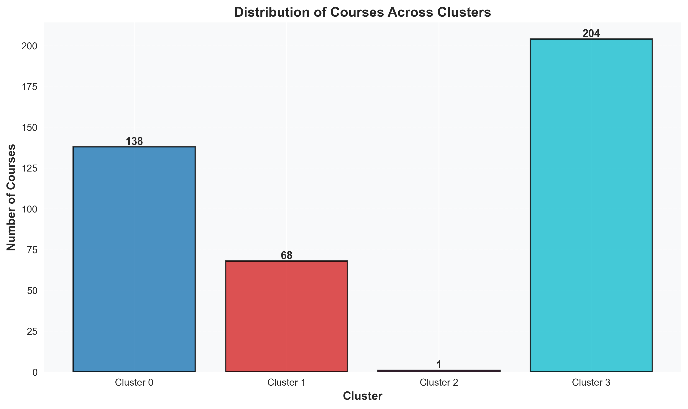

我的學期課表
一鍵導入班級必選修，輕鬆規劃學期進度
已選課程 (0 學分)
課程智慧推薦
三步驟快速找到您的理想課程
推薦條件
27 學分
推薦結果
請在左側設定條件並點擊「開始推薦」
歷年課程資訊
查詢過往開課紀錄、選課人數趨勢，知己知彼
通識課程分群分析
基於選課行為（中籤率與飽和度）的 K-Means 分群結果
群組定義
Cluster 0
熱門超額
競爭激烈，選上人數超過上限
138 門
Cluster 1
冷門未滿
選課人數少，容易選上
68 門
Cluster 2
特殊案例
異常數據，需個別檢視
1 門
Cluster 3
一般熱門
中籤率中等，接近滿額
204 門
選課行為分布

展示各群組在中籤率與飽和度上的分布位置
群組規模

呈現各群組包含的課程數量
統計分布

顯示各群組的數據集中趨勢與分散程度
搜尋結果
等待搜尋
請在上列輸入關鍵字，探索課程歷史數據